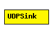

File: Applications/UDPApp/UDPSink.ned
C++ definition: click here
Consumes and prints packets received from the UDP module.
The following diagram shows usage relationships between modules, networks and channels. Unresolved module (and channel) types are missing from the diagram. Click here to see the full picture.
| Name | Type | Description |
|---|---|---|
| local_port | numeric const | if -1, app doesn't bind in UDP |
| Name | Direction | Description |
|---|---|---|
| from_udp | input | |
| to_udp | output |
simple UDPSink parameters: local_port : numeric const; // if -1, app doesn't bind in UDP gates: in: from_udp; out: to_udp; endsimple